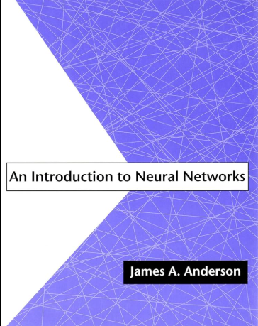

Introduction to Neural Networks
Συγγραφείς: James A. Anderson
Σύνολο Σελίδων: 350
Περιγραφή: Θεωρητική και πρακτική εισαγωγή στα νευρωνικά δίκτυα.
Αξ.: 4.5/5 (200 αξιολογήσεις)
ΠερισσότεραΣυγγραφείς: James A. Anderson
Σύνολο Σελίδων: 350
Περιγραφή: Θεωρητική και πρακτική εισαγωγή στα νευρωνικά δίκτυα.
Αξ.: 4.5/5 (200 αξιολογήσεις)
ΠερισσότεραΣυγγραφείς: Franchois Chollet
Σύνολο Σελίδων: 400
Περιγραφή: Πρακτική εισαγωγή στα νευρωνικά δίκτυα με χρήση Python.
Αξ.: 4.7/5 (150 αξιολογήσεις)
ΠερισσότεραΣυγγραφείς: Lauri Thomas
Σύνολο Σελίδων: 500
Περιγραφή: Προηγμένες τεχνικές σχεδίασης νευρωνικών δικτύων.
Αξ.: 4.8/5 (180 αξιολογήσεις)
ΠερισσότεραΣυντελεστές: Thomas Wells
Διάρκεια: 1 ώρα 12 λεπτά
Περιγραφή: Θεμελιώδη στοιχεία των νευρωνικών δικτύων.
Αξ.: 4.4/5 (125 αξιολογήσεις)
ΠερισσότεραΣυντελεστές: Bennedict Mathurin
Διάρκεια: 2 ώρες
Περιγραφή: Εμβάθυνση στις τεχνικές βαθιάς μάθησης.
Αξ.: 4.9/5 (300 αξιολογήσεις)
ΠερισσότεραΣυντελεστές: Bilal Coulibaly
Διάρκεια: 1 ώρα 45 λεπτά
Περιγραφή: Πρακτικές εφαρμογές νευρωνικών δικτύων στη βιομηχανία.
Αξ.: 4.6/5 (250 αξιολογήσεις)
Περισσότερα